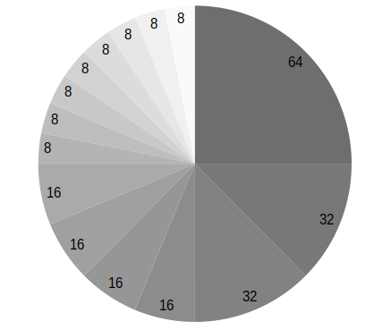

Direccionamiento IP#
El direccionamiento IP es la parte encargada de asignar de forma correcta a cada equipo una dirección IP, de forma que los equipos puedan comunicarse correctamente entre sí
Las direcciones IPV4 se expresan mediante un número binario de 32 bits permitiendo un espacio de direcciones de hasta 4.294.967.296 (232) direcciones posibles.
Se reservaron ciertos rangos de direcciones IP de las clases A, B y C para permitir su uso interno o privado en redes de área local (LAN) como por ejemplo las de una casa o una oficina.


Dirección de red (Network) es la primera dirección de una subred y se usa para identificarla. No se puede asignar a un host,La dirección de red se obtiene estableciendo todos los bits de la parte de host en 0, veamos el ejemplo con la siguiente IP de tipo B 128.192.244.240:
Address: 128.192.224.240 10000000.11000000. 11100000.11110000
Netmask: 255.255.0.0 = 16 11111111.11111111. 00000000.00000000
Network: 128.192.0.0/16 10000000.11000000. 00000000.00000000
HostMin: 128.192.0.1 10000000.11000000. 00000000.00000001
HostMax: 128.192.255.254 10000000.11000000. 11111111.11111110
La dirección de broadcast es la última dirección de una red IP y se usa para enviar mensajes a todos los dispositivos dentro de esa red.
Broadcast: 128.192.255.255 10000000.11000000. 11111111.11111111
Hosts/Net: 65534 Class B
Las redes privadas son bastante comunes en esquemas de redes de área local (LAN) de oficinas, empresas y ámbito doméstico, debido a que no tienen la necesidad de usar direcciones IP públicas en sus dispositivos y no son enrutables a través de Internet.
Las direcciones de Internet privadas son:

Esta última red de clase B, pertenece a las direcciones APIPA (Automatic Private IP Addressing), también llamadas link-local en IPv4, queda reservada para equipos que tienen activa la configuración de la tarjeta de red automática (para que un servidor DHCP les responda y les ofrezca su configuración) y ningún servidor DHCP les responda (habitualmente este servidor está configurado en el enrutador), en ese caso estos equipos cogen aleatoriamente una ip de este rango de IP privadas para poder comunicarse con otros equipos de la red a los que tampoco les haya respondido el servidor DHCP.
El subnetting IP#
La subnetting (o subdivisión de redes) es una técnica utilizada para dividir una red de direcciones IP en subredes más pequeñas y eficientes. En otras palabras, se trata de dividir una red IP en varias subredes más pequeñas, para que los dispositivos puedan comunicarse de manera más eficiente.
Por tanto si tengo por ejemplo la dirección de host 172.17.12.95 ya sabemos que es de clase B con mascara 255.255.0.0 y que pertenece a la red 172.17.0.0 sin necesidad de especificar máscara ninguna. Y esto es así porque el 172 inicial de la dirección pertenece a la clase B.
Ahora bien ¿Y si queremos disponer de redes más pequeñas que pertenezcan al espacio de direccionamiento 172.17.x.x?
Nada impide hacer lo siguiente:
172.17.1.0 con mascara 255.255.255.0
172.17.2.0 con mascara 255.255.255.0
172.17.3.0 con mascara 255.255.255.0
…
Pero claro la red 172.17.1.0 255.255.255.0 no es en realidad una red de clase C, sino que con la máscara hemos definido una subred (subnet) de tipo C dentro de la red 172.17.0.0 que es una red tipo B y mucho más amplia.
Así pues este subnetting permite tener redes más pequeñas dentro de una red estándar mayor. A nivel de routing todas esas subredes de tipo C quedan englobadas en una sola ruta de tipo B y el router de la red sólo necesita una ruta para el encaminamiento de estas subredes.
Además del subnetting, este juego con los bits de máscara permite hacer lo contrario que el subnetting y se llamó sumarizacion de redes IP.
CIDR#
Hoy en día, CIDR (Classless Inter-Domain Routing) es el estándar utilizado en redes IP para la asignación y gestión de direcciones, reemplazando en gran medida el sistema antiguo de clases A, B y C, en esencia, aplica lo mismo que el subnetting pero ampliando el concepto. En CIDR no existen clases A, B o C. El valor de la dirección IP no implica ninguna máscara implícita, como sucedía antes con los primeros bits de la dirección. En CIDR toda definición de una red IP debe ser acompañada de una definición de máscara que concreta la red.
Por ejemplo, cuando hablamos en términos de CIDR no podemos decir que la dirección 172.17.25.12 pertenezca a la red 172.17.0.0 a menos que se especifique como 172.16.25.12/16.
En CIDR ya no hay clases como tal, sino redes definidas por el prefijo que acompaña a la dirección de red, utiliza la nomenclatura de barra invertida, del tipo /xx (donde xx representa los bits puestos a 1 de la máscara en binario) y está basada en lo que se denominó variable-length subnet masking (VLSM).
Así por ejemplo, hablando en términos de subnetting, podemos decir que la red: 172.17.11.25 con máscara 255.255.255.0 (que no es en realidad una red de clase C) es una subred (o subnet) de la red de clase B 172.17.0.0.
La dirección de red sigue siendo la que tiene todos los bits del host a 0, y la de broadcast a 1, se utiliza una máscara de red, realizando la operación AND con la dirección IP para encontrar la dirección de red, por ejemplo:
La dirección IP es 192.168.20.100/26
Address: 192.168.20.100 11000000.10101000.00010100.01 100100
Netmask: 255.255.255.192 = 26 11111111.11111111.11111111.11 000000
AND ---------------------------------------
Network: 192.168.20.64/26 11000000.10101000.00010100.01 000000
HostMin: 192.168.20.65 11000000.10101000.00010100.01 000001
HostMax: 192.168.20.126 11000000.10101000.00010100.01 111110
Broadcast: 192.168.20.127 11000000.10101000.00010100.01 111111
Hosts/Net: 62 Class C, Private Internet
Cuando divides una red en subredes más pequeñas, la primera subred (la que comienza con la dirección de red original) y la última subred (la que termina con la dirección de broadcast de la red original) a menudo se reservan. Esto se debe a que algunos equipos antiguos o protocolos podrían confundirse al manejar estas subredes, ya que sus direcciones coinciden con la red original y su broadcast.
Ejemplos#
¿ Qué máscara habría que aplicar para dividir la red 194.168.100.0 en 16 subredes ?
La red 194.168.100.0 es una red de Clase C por defecto, lo que significa que su máscara de subred predeterminada es: 255.255.255.0 (o /24 en notación CIDR).
\(2^{n} \geq 16\), es decir \(n \geq 4\)
tomamos los 4 primeros bits
1111 0000 = 128 + 64 + 32 + 16 + 0*8 + 4*0 + 2*0 + 1*0 = 240
es decir 194.168.100.0/28 (255.255.255.240)
hay \(2^{4}-2 = 14\) hosts por subred

VLSM (Máscara de Red de Longitud Variable) permite dividir un espacio de red en partes desiguales, es decir, la mascara de subred de una dirección IP variara según la cantidad de bits que se tomen prestados para una subred especifica, se conoce también como división de subredes en subredes. Veamos el siguiente ejemplo:
Una empresa compra una red con direcciones IP públicas de clase C 200.1.1.0. Las quiere repartir entre sus 8 departamentos. En el caso de que haga un subnetting sin VLSM, quedaría \(2^{n} = 8\), es decir, \(n = 3\) (11100000).

Podemos hacer de nuevo subnetting con la primera subred, 200.1.1.0/27 para crear 4 subredes (/29)

Volvamos al caso anterior, 194.168.100.0 (Ejemplo de subneting clásico) y hagamos n=2, es decir 194.168.100.0/26 (255.255.255.192)
Hay \(2^{6}-2 = 60\) hosts por subred

Vamos hacer sugneting con las 3 ultimas redes, tomaremos n=1,2,3

Ejemplo de direccionamiento VLSM para 192.168.0.0/24
Vamos a optimizar el espacio de direcciones utilizando VLSM para cumplir con los siguientes requisitos:
1 subred para 30 hosts (VLAN 1)
1 subred para 10 hosts (VLAN 2)
3 subredes para 2 hosts cada una (enlaces entre routers)
Empezamos asignar la subred más grande (30 hosts).
Para 30 hosts necesitamos: \(2^{n} - 2 \geq 30\) es decir n = 5
Máscara: /27 (255.255.255.224)
Subred asignada: 192.168.0.0/27
Rango útil: 192.168.0.1 - 192.168.0.30 (\(2^{5} - 2 = 30\) hosts por red)
Broadcast: 192.168.0.31
Asignamos la subred (10 hosts).
Para 10 hosts necesitamos: \(2^{n} - 2 \geq 10\) es decir n = 4
Máscara: /28 (255.255.255.240)
Subred asignada: 192.168.0.32/28
Rango útil: 192.168.0.33 - 192.168.0.46 (\(2^{4} - 2 = 14\) hosts por red)
Broadcast: 192.168.0.47
Asignamos las tres subredes (2 hosts).
Para 2 hosts necesitamos: \(2^{n} - 2 \geq 2\) es decir n = 2
Máscara: /30 (255.255.255.252)
Subredes asignadas: (\(2^{2} - 2 = 2\) hosts por red)
192.168.0.48/30
Rango útil: 192.168.0.49 - 192.168.0.50
Broadcast: 192.168.0.51
192.168.0.52/30
Rango útil: 192.168.0.53 - 192.168.0.54
Broadcast: 192.168.0.55
192.168.0.56/30
Rango útil: 192.168.0.57 - 192.168.0.58
Broadcast: 192.168.0.59
Tablas de Encaminamiento#
Los routers mantienen una tabla de encaminamiento en la que registran las rutas hacia nodos y redes alcanzables. Estas rutas pueden ser estáticas (definidas manualmente por el administrador de red) o dinámicas (aprendidas automáticamente por el router).
Cada nodo decide a qué nodo (dirección de red) enviará un paquete, basándose en pares de dirección IP de destino y la dirección del siguiente salto.
Para direccionar un único equipo (no una red completa), se utiliza la máscara 255.255.255.255 o /32.
Para establecer una ruta por defecto (hacia dónde enviar los paquetes si no se encuentra el destino), se utiliza la dirección 0.0.0.0/0.
Si la red es directamente alcanzable, la dirección del siguiente salto es una interfaz del router, que se indica como 0.0.0.0.
La dirección de red se obtiene realizando una operación lógica AND entre la dirección IP y la máscara de subred: Dirección_de_red = Dirección_IP AND Máscara.
Si dos direcciones IP pertenecen a la misma red, entonces IP1 XOR IP2 = 0. Esto indica que ambos hosts están en la misma red.
La dirección de broadcast se obtiene con la operación OR entre la dirección de red y el complemento de la máscara: Dirección_de_Broadcast = Dirección_de_red OR NOT Máscara. Esta es siempre la última dirección de una red o subred.
El router necesita tener una dirección IP en cada subred a la que esté conectado. Solo enrutará si el destino está en una subred diferente. Si no puede encontrar un siguiente salto, enviará un mensaje ICMP indicando que el destino es inalcanzable.
Ejemplo de Tabla de Enrutamiento#
Una tabla de enrutamiento básica contiene las siguientes columnas:
Destino: La dirección IP de la red de destino.
Máscara de subred: La máscara de subred que define el rango de direcciones dentro de la red de destino.
Gateway/Nodo siguiente: La dirección IP del siguiente router o gateway al que se debe enviar el paquete.
Interfaz: La interfaz de red a través de la cual se enviará el paquete.
Destino |
Máscara de subred |
Gateway/Nodo siguiente |
Interfaz |
|---|---|---|---|
192.168.1.0 |
255.255.255.0 |
192.168.1.1 |
eth0 |
192.168.2.0 |
255.255.255.0 |
192.168.1.2 |
eth1 |
0.0.0.0 |
0.0.0.0 |
192.168.1.24 |
eth0 |
Rutas de ejemplo:
La primera entrada indica que para llegar a la red 192.168.1.0/24, el paquete se enviará al siguiente salto en 192.168.1.1 a través de la interfaz eth0.
La segunda entrada es para la red 192.168.2.0/24, que se enviará a través de la interfaz eth1 al siguiente salto en 192.168.1.2.
La tercera entrada es una ruta por defecto (0.0.0.0/0), indicando que cualquier tráfico que no coincida con una de las rutas anteriores se enviará a través del gateway 192.168.1.24. Si 192.168.1.24 está conectado a Internet, cualquier dispositivo que use esta tabla de enrutamiento podrá navegar en la web.
Además de estas rutas estáticas, las rutas dinámicas pueden ser aprendidas automáticamente mediante protocolos como OSPF, RIP o BGP.
Caso práctico: Router Cisco#
Para instalar el router Cisco 7200 en GNS3 seguiremos los siguientes pasos:
Descarga la imagen para el router Cisco c7200-adventerprisek9-mz.153-3.XB12.image
Añadelo a GNS3 ( New template / Install an appliance from the GNS3 server (recommended)
En Routers selecciona Cisco 7200
Install the appliance on your local computer
Cuando estes en (Required files) presiona Import y busca los archivos que te has descargado.
Realiza la siguiente red, necesitaras añadir otro slots en el router (PA-FE-TX)
Configura los pcs virtuales (VPC)
set pcname 192.168.1.10/24
ip 192.168.1.10/24 192.168.1.1
set pcname 192.168.1.11/24
ip 192.168.1.11/24 192.168.1.1
set pcname 192.168.2.10/24
ip 192.168.2.10/24 192.168.2.1
Fíjate que los Pcs virtuales (VPC) no pueden verse los que estan en subredes diferentes

Vamos a configuración las interfaces de red del router, pondremos a FastEthernet0/0 la ip 192.168.1.1 y FastEthernet0/1 para la ip 192.168.2.1
enable
configure terminal
interface FastEthernet0/0
ip address 192.168.1.1 255.255.255.0
no shutdown
exit
interface FastEthernet1/0
ip address 192.168.2.1 255.255.255.0
no shutdown
exit
Puedes comprobar que las interfaces de red estan configruadas correctamente con el comando show ip interface brief. Fijate que cuando configuras las interfaces del router Cisco 7200, el enrutamiento básico se configura automáticamente

Para ver las tablas de enrutamiento ejecutamos el comando show ip route
Caso práctico: Router Cisco (DHCP)#
Vamos a crear un servidor dhcp para la red 10.0.0.0/26

enable
configure terminal
service dhcp
ip dhcp pool tu_nombre
network 10.0.0.0 255.255.255.192
default-router 10.0.0.1
dns-server 8.8.8.8
lease 2
ip dhcp excluded-address 10.0.0.1 10.0.0.9
interface FastEthernet0/0
ip address 10.0.0.1 255.255.255.192
no shutdown
exit
end
La opción lease 2, establece un período de arrendamiento de 2 días para las direcciones IP asignadas.
show ip dhcp pool # Muestra los pools creados
show ip dhcp binding # Lista las asignaciones de IP
debug ip dhcp server # Depuración en tiempo real
Caso práctico: Router Cisco (Cloud)#
En GNS3, el Cloud sirve para conectar tu laboratorio virtual con el mundo exterior, es decir, con tu computadora anfitriona (host) y, a través de ella, con Internet o redes físicas reales.
Crea el diguiente esquema, configura el erouter con la ip 10.4.X.Y, siendo X e Y los valores de tu ip.

enable
configure terminal
access-list 100 permit ip 20.0.0.0 0.0.0.255 any
ip nat inside source list 100 interface FastEthernet1/0 overload
interface FastEthernet0/0
ip address 20.0.0.1 255.255.255.0
no shutdown
ip nat inside
interface FastEthernet1/0
ip address 10.4.104.100 255.0.0.0
no shutdown
ip nat outside
ip route 0.0.0.0 0.0.0.0 10.0.0.2
end
write memory
Caso práctico: Router Cisco (Enrutamiento estático)#

R1
enable
configure terminal
interface FastEthernet0/0
ip address 192.168.1.1 255.255.255.0
no shutdown
interface FastEthernet1/0
ip address 192.168.2.1 255.255.255.252
no shutdown
ip route 172.16.0.0 255.255.255.0 192.168.2.2
ip route 20.0.0.0 255.255.255.0 192.168.2.2
ip route 192.168.4.0 255.255.252.0 192.168.1.1
ip route 0.0.0.0 0.0.0.0 192.168.2.2
end
write memory
R2
enable
configure terminal
interface FastEthernet0/0
ip address 172.16.0.1 255.255.255.0
no shutdown
interface FastEthernet1/0
ip address 192.168.2.2 255.255.255.252
no shutdown
interface FastEthernet2/0
ip address 192.168.3.1 255.255.255.252
no shutdown
ip route 192.168.1.0 255.255.255.0 192.168.2.1
ip route 20.0.0.0 255.255.255.0 192.168.3.2
ip route 172.16.0.0 255.255.255.0 172.16.0.1
ip route 0.0.0.0 0.0.0.0 192.168.3.2
end
write memory
R3
enable
configure terminal
access-list 100 permit ip 20.0.0.0 0.0.0.255 any
access-list 100 permit ip 172.16.0.0 0.0.0.255 any
access-list 100 permit ip 192.168.1.0 0.0.0.255 any
ip nat inside source list 100 interface FastEthernet2/0 overload
interface FastEthernet0/0
ip address 20.0.0.1 255.255.255.0
no shutdown
ip nat inside
interface FastEthernet1/0
ip address 192.168.3.2 255.255.255.252
no shutdown
ip nat inside
interface FastEthernet2/0
ip address 10.4.104.100 255.0.0.0
no shutdown
ip nat outside
ip route 192.168.1.0 255.255.255.0 192.168.3.1
ip route 172.16.0.0 255.255.255.0 192.168.3.1
ip route 192.168.2.0 255.255.255.252 192.168.3.1
ip route 0.0.0.0 0.0.0.0 10.0.0.2
end
write memory
Caso práctico: Router MikroTik#
ikroTik utiliza RouterOS, un sistema operativo basado en Linux diseñado específicamente para la gestión de redes, podemos bajarnos mikrotik-chr.gnsa y la chr-7.16.img
Para añadirlo a GNS3 New template / Import an appliance file (.gn3a extension)

Vamos a utilizar tres ordenadores con la siguiente configuración:
La forma más rápida de confiruar los 3 clientes es utilizando el botón de la derecha del ráton y pulsando Edit config, copiamos en cada caso la confiruación correspondiente:
set pcname 10.0.1.10/24
ip 10.0.1.10/24 10.0.1.1
set pcname 10.0.1.11/24
ip 10.0.1.11/24 10.0.1.1
set pcname 10.0.2.10/24
ip 10.0.2.10/24 10.0.2.1
Haz un pantallazo como el siguiente donde se vea que la 10.0.1.10 no llega a la 10.0.2.10
Asigna las IPs a las Interfaces de MikroTik
/ip address add address=10.0.1.1/24 interface=ether1
/ip address add address=10.0.2.1/24 interface=ether2
Puedes comprobar que todo esta bien con el comando /ip address print
Por defecto, MikroTik ya enruta paquetes entre interfaces con direcciones IP directamente conectadas. Para verificar que las rutas existen, utiliza:
/ip route print
# DST-ADDRESS GATEWAY DISTANCE
0 10.0.1.0/24 ether1 0
1 10.0.2.0/24 ether2 0
Comprueba que ahora si llega y sube un pantallazo del ping y de las tablas de enrutamiento.
Caso práctico: Vyos#
Fíjate en la siguiente figura en la que se muestran 6 ordenadores unidos por 3 switch y 3 routers

Como podemos ver en la figura tenemos tres segmentos de red /24 y dos segmentos de red que unen los router en /30.
Para este caso práctico vamos a utilizar GNS3 que es un software de emulación de red de código abierto que permite a los usuarios simular topologías de red complejas y experimentar con diferentes configuraciones de red y VyOS, que es un sistema operativo de red de código abierto basado en el proyecto Vyatta. Está diseñado para ser utilizado como un enrutador de red, firewall, VPN y plataforma de virtualización de red.
Para instalar un Router pulsaremos a (New
La forma más rápida de confiruar los 6 clientes es utilizando el botón de la derecha del ráton y pulsando Edit config, copiamos en cada caso la confiruación correspondiente:
set pcname 10.0.1.10/24
ip 10.0.1.10 10.0.1.254 24
set pcname 10.0.1.11/24
ip 10.0.1.11 10.0.1.254 24
set pcname 10.0.2.10/24
ip 10.0.2.10 10.0.2.254 24
set pcname 10.0.2.11/24
ip 10.0.2.11 10.0.2.254 24
set pcname 10.0.3.10/24
ip 10.0.3.10 10.0.3.254 24
set pcname 10.0.3.11/24
ip 10.0.3.11 10.0.3.254 24
Abre una terminal y comprueba que los clientes solo pueden hacer ping con nodos que esten en su misma subred, para que puedan verse todos entre sí pasamos a configurar los routers, para ello empezamos con R2, abrimos la teminal y vemos que no esta configuradas las interfaces de red
vyos@vyos:~$ show interfaces
Codes: S - State, L - Link, u - Up, D - Down, A - Admin Down
Interface IP Address S/L Description
--------- ---------- --- -----------
eth0 - u/u
eth1 - u/u
eth2 - u/u
lo 127.0.0.1/8 u/u
::1/128
Para configurarlas, abrimos una terminal:
vyos@vyos:~$ configure
WARNING: You are currently configuring a live-ISO environment,....
[edit]
vyos@vyos# set interfaces ethernet eth1 address 10.0.0.2/30
[edit]
vyos@vyos# set interfaces ethernet eth0 address 10.0.2.254/24
[edit]
vyos@vyos# set interfaces ethernet eth1 address 10.0.0.5/30
Tampoco estan configuradas las tablas de encaminamiento
vyos@vyos:~$ netstat -r
Kernel IP routing table
Destination Gateway Genmask Flags MSS Window irtt Iface
Añadimos las siguientes rutas estaticas:
vyos@vyos# set protocols static route 10.0.1.0/24 next-hop 10.0.0.1
[edit]
vyos@vyos# set protocols static route 10.0.3.0/24 next-hop 10.0.0.6
[edit]
Para que los cambios tengan efectos los subimos y salvamos:
vyos@vyos# commit
[edit]
vyos@vyos# save
Saving configuration to '/config/config.boot'...
Done
[edit]
Comprobamos la tabla de encaminamiento de R2

vyos@vyos# netstat -r
Kernel IP routing table
Destination Gateway Genmask Flags MSS Window irtt Iface
10.0.0.0 0.0.0.0 255.255.255.252 U 0 0 0 eth1
10.0.0.4 0.0.0.0 255.255.255.252 U 0 0 0 eth1
10.0.1.0 10.0.0.1 255.255.255.0 UG 0 0 0 eth1
10.0.2.0 0.0.0.0 255.255.255.0 U 0 0 0 eth0
10.0.3.0 10.0.0.6 255.255.255.0 UG 0 0 0 eth1
[edit]
y las interfaces de red como
vyos@vyos# show interfaces
ethernet eth0 {
address 10.0.2.254/24
hw-id 0c:51:f2:fd:00:00
}
ethernet eth1 {
address 10.0.0.2/30
address 10.0.0.5/30
hw-id 0c:51:f2:fd:00:01
}
ethernet eth2 {
hw-id 0c:51:f2:fd:00:02
}
loopback lo {
}
[edit]
Para el caso R1, ponemos un resumen de los comandos utilizados
show interfaces
configure
set interfaces ethernet eth0 address 10.0.1.254/24
set interfaces ethernet eth1 address 10.0.0.1/30
set protocols static route 10.0.2.0/24 next-hop 10.0.0.2
set protocols static route 10.0.3.0/24 next-hop 10.0.0.2
commit
save
Comprobamos la tabla de encaminamiento de R1
vyos@vyos# netstat -r
Kernel IP routing table
Destination Gateway Genmask Flags MSS Window irtt Iface
10.0.0.0 0.0.0.0 255.255.255.252 U 0 0 0 eth1
10.0.1.0 0.0.0.0 255.255.255.0 U 0 0 0 eth0
10.0.2.0 10.0.0.2 255.255.255.0 UG 0 0 0 eth1
10.0.3.0 10.0.0.2 255.255.255.0 UG 0 0 0 eth1
[edit]
y las interfaces de red como
vyos@vyos# show interfaces
ethernet eth0 {
address 10.0.1.254/24
hw-id 0c:36:d7:ab:00:00
}
ethernet eth1 {
address 10.0.0.1/30
hw-id 0c:36:d7:ab:00:01
}
ethernet eth2 {
hw-id 0c:36:d7:ab:00:02
}
loopback lo {
}
[edit]
Para el caso de R3
show interfaces
configure
set interfaces ethernet eth0 address 10.0.3.254/24
set interfaces ethernet eth2 address 10.0.0.6/30
set protocols static route 10.0.1.0/24 next-hop 10.0.0.5
set protocols static route 10.0.2.0/24 next-hop 10.0.0.5
commit
save
Comprobamos la tabla de encaminamiento de R3
vyos@vyos# netstat -r
Kernel IP routing table
Destination Gateway Genmask Flags MSS Window irtt Iface
10.0.0.4 0.0.0.0 255.255.255.252 U 0 0 0 eth2
10.0.1.0 10.0.0.5 255.255.255.0 UG 0 0 0 eth2
10.0.2.0 10.0.0.5 255.255.255.0 UG 0 0 0 eth2
10.0.3.0 0.0.0.0 255.255.255.0 U 0 0 0 eth0
[edit]
y las interfaces de red como
vyos@vyos# show interfaces
ethernet eth0 {
address 10.0.3.254/24
hw-id 0c:73:d2:39:00:00
}
ethernet eth1 {
hw-id 0c:73:d2:39:00:01
}
ethernet eth2 {
address 10.0.0.6/30
hw-id 0c:73:d2:39:00:02
}
loopback lo {
}
[edit]
Ejecuta los siguientes comandos ping 10.0.3.10 y trace 10.0.2.10 en la 10.0.1.10, sube un pantallazo